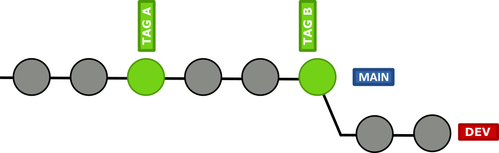
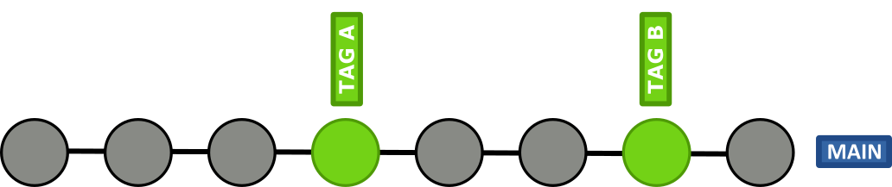
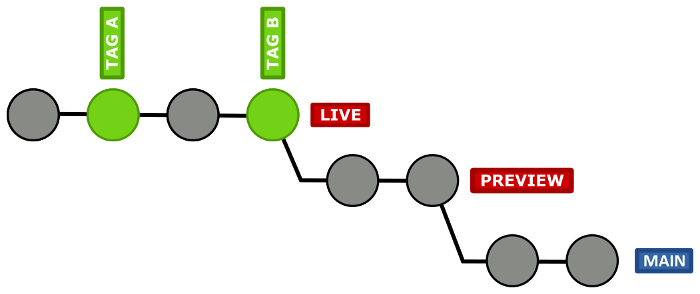

GIT
Develop Together
@ThomasWeinert@thw@phpc.social
About Me
- dimensional GmbH
- Application Developer
- Programming >= 20 years
- XML Fanatic
- Brompton Rider

TOC
- Repositories
- Main Branch
- Feature Branches
- Releases
- Commits
- Commit Messages
- Merge/Pull Requests
- Configuration
- Signing
- Standard Files
Repositories
Remote

Local

Working Copy

Stash

Main
Stable
Unstable
Unstable Main + Stages
Protected Branches

Feature Branches

Naming
issue-123_summaryfeature/feature_titlehotfix/summary_of_bug- ...

Initialize: Create
$ git checkout -b new_branch_name$ git branch new_branch_name
$ git checkout new_branch_name
Maintain: Rebase
$ git rebase main
Optimize: Squash
git reset $(git merge-base main $(git rev-parse --abbrev-ref HEAD))Publish: Push
git push origin/maingit push origin/feature-branch --forceIntegrate: Fast Forward Merge
$ git rebase main
$ git checkout main
$ git merge --ff-only feature_branch
Integrate: Merge
$ git checkout main
$ git merge --no-ff feature_branch
Releases
Semantic Versions
MAJOR.MINOR.PATCH
- PATCH: Bugfixes
- MINOR: New Features
- MAJOR: Breaking Changes
Upside: Users

- Risk Evaluation
- Dependency Management
Downside: Marketing
- Small Increments
- No new features
in major versions
Tags

Release Branches

Stale Branches

Development Revision
$ git describe --tags
5.9.0-4-gb6a908bCommits
Don'ts
- "End of day" commits
- "Per file" commit
- Generic commit messages (misc fixes)
- Two changes in one commit
- Whitespace changes together with code changes
- Code drops
Dos
- "Per logical change" commit
- Descriptive commit messages
Partial File Commits
$ git add --patch <filename>
Commit Messages

Structure
[LABEL] Add Summary Of Less Then 50 Chars
A more detailed description in present tense that answers the
following questions:
- Why is it necessary?
- How does it address the issue?
- What effects does the patch have?
Resolves: #123
Related: #456
Related: https://example.com/related-info
Summary
- Imperative (Add, Fix, ...)
- 50 characters limit
- Capitalize
- Blank line between summary and description
- Reference issue
- Labels ([BUGFIX], [FEATURE], [!!!])
Summary
if applied, this commit will...
Description
- Present tense
- 72 characters line limit
- Describe the solution (problem is described in the issue)
- Blank line between description and footer
Footer
- Reference additional relationships (issues/stories/tasks)
Example Gitlab

Example Jira

Merge/Pull Requests
Suggestion

Create Request

WIP Request

Review Changes

Accept Contributions

Configuration
Line Endings
core.autocrlf=input
Checkout LF, commit LFcore.autocrlf=true
Checkout OS specific, commit LFcore.autocrlf=false
Checkout as is, commit as is
.editorconfig
# top-most EditorConfig file
root=true
# Unix-style newlines with a newline ending every file
[*]
end_of_line=lf
insert_final_newline=true
indent_style=space
indent_size=2
charset=utf-8
[*.bat]
end_of_line=crlf.gitignore
# NPM
node_modules/
# Composer
vendor/
# Build Artifacts
build/
.gitignore_global
$ git config --global core.excludesfile \
'~/.gitignore_global'
$ git config --global core.excludesfile \
"%USERPROFILE%\.gitignore_global"
# IntelliJ
.idea/
*.iml.gitproperties
# Enforce line break style
*.ts text eol=lf
*.js text eol=lf
*.php text eol=lf
*.bat text eol=crlf
# Exclude from export
.gitattributes export-ignore
.gitignore export-ignore
/tests export-ignoreTrack empty directories
- .gitkeep
-
.gitignore
* !.gitignore
Signing Your Work
Configure GPG Key
$ git config --global user.signingkey 0A46826A
$ git config --global commit.gpgsign trueStandard Files
README.md
How to use
CHANGELOG.md
Release History
LICENSE
Conditions for use
CONTRIBUTING.md
How to contribute
CODE_OF_CONDUCT.md
Social Rules
Hooks
- pre-commit
- prepare-commit-msg
- commit-msg
- post-commit
Automate Hooks
- Node.js - Husky
- PHP - Captain Hook
Links